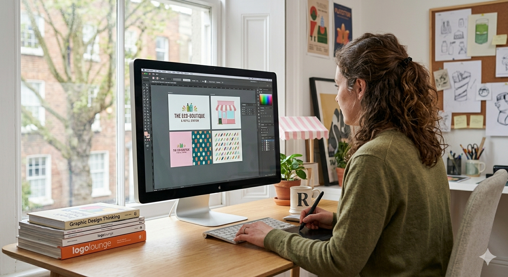
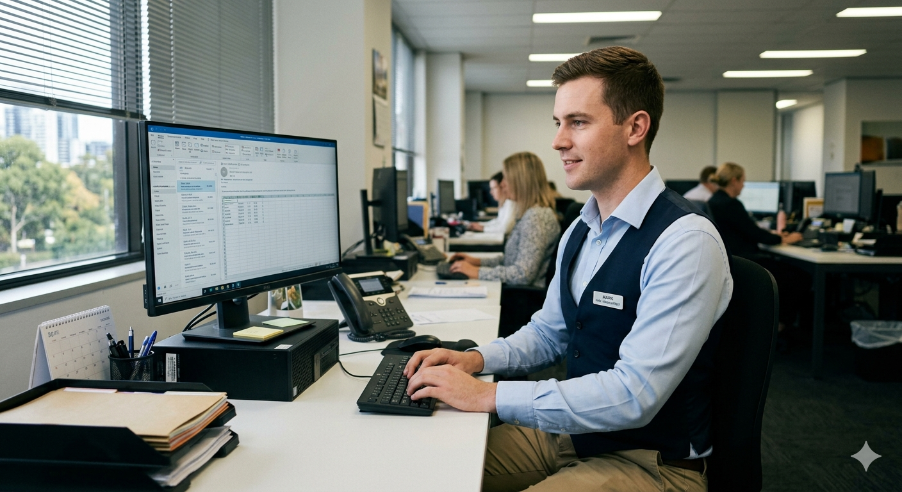

Julia was a billboard desiner. She left the companie for her love joy on kids eyes when they get the new toy they always wanted.

Mark is fast with mental math. He is a great peson. He loves his toys and wishes to shair that love with the next generations.
Whyet is a guy from northern Michigan. He went to hight school but nothing else. He was hired because he had the same love for old toys as everyone else on the team. He is great behind the computer.